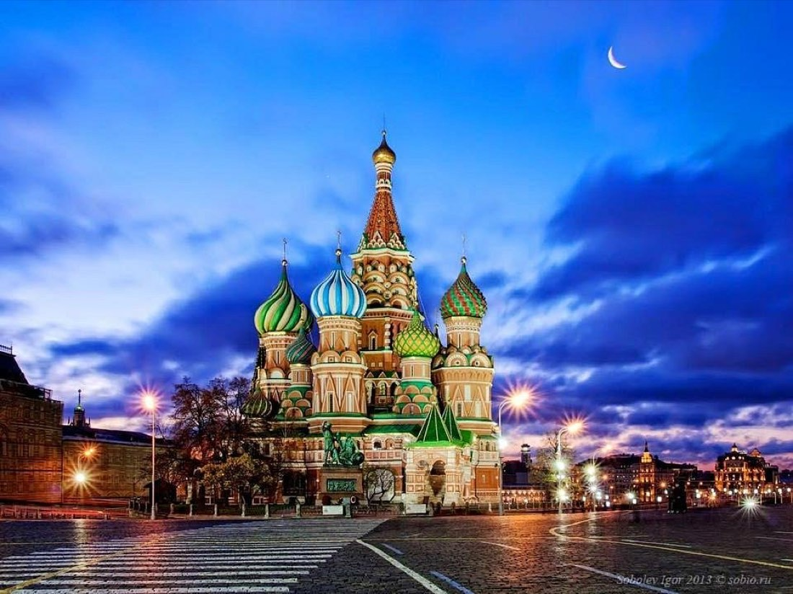

Kazablanka Turu: Tarih, Kültür, Gece Hayatı
Kazablanka: Fas'ın kalbi, Atlas'ın beyaz şehri.
Devamını oku →
Gezi rehberleri, rota notları ve sık sorulan sorular.
Kazablanka: Fas'ın kalbi, Atlas'ın beyaz şehri.

Fes'teki Karaouïne Üniversitesi: dünyanın en eski eğitim kurumlarından biri.

Japonya'ya gitmeden önce bilmeniz gerekenler: şehirler, lezzetler ve ipuçları.

Fas turu hakkında merak edilen 20 soru ve cevapları.

Rusya'nın Beyaz Geceleri nedir, ne zaman yaşanır, nasıl planlanır?